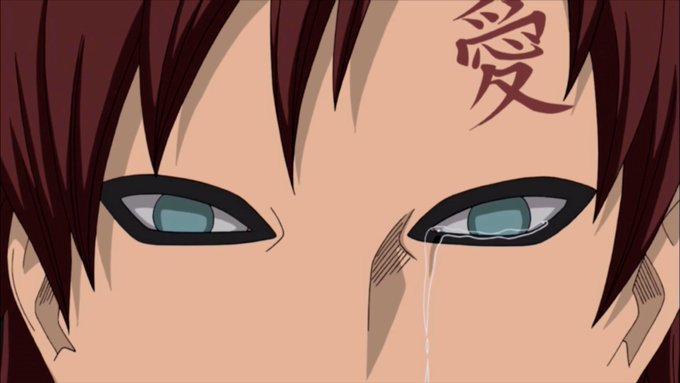

-
POPO🚛 @truck_chan
내 안의 화이트는 약간 천사같지만 선녀같고 사람들을 홀리는?? 그런 이미지랄까...(애초에 쭉 뻗은 흰 다리부터가ㅠㅠ!!) 내 생각엔 아무래도 작가님이 말은 안하지만 화이트에게 도화살 속성을 부여한거같기도 하당...
2025년 9월 15일 -
MIRO @miromata
화이트 나무위키 보는데
'이마까지 검게 보이는 것은 앞머리 그림자 데포르메와 합쳐진 것.'
아니 그럼 화이트가 지금 가아라 상태라고? 2025년 9월 4일 -
[대화앤솔통판 10/12] 대니악개 @whadaechoong
대니 다마고치 소량 제작 예정입니다🙏 맞팔분 한정 배송비만 받고 드리니 원하시면 DM 주세요!
치토 ←갓캐 인장(1분이상 보지 마세요) @Smile_OC2화이트가 친구들에게 “취업을 해서 좋은 사회에 이바지하라”는 등의 말을 반복적으로 하는 것은 정상성에 강한 집착을 보이지만, 이는 역설적으로 본인이 그 정상성에 속하지 못한다고 스스로 인식하기 때문이라고 해석했어요.
2025년 9월 4일
(이어서태민만두 @manmanne화이트 공컾(약혼녀)있는데 백발x백발로 공컾깨하시는 분들 자주 보이네...와꾸합 cp인가
2025년 9월 4일[대화앤솔통판 10/12] 대니악개 @whadaechoong@이자벨에게 성별논란은 대체 뭔생각으로 넣은거지.
2025년 9월 7일
@@난 그냥 작가가 오토코노코충이라고 생각중
@@@이거맞다
@@@@합법적 의심